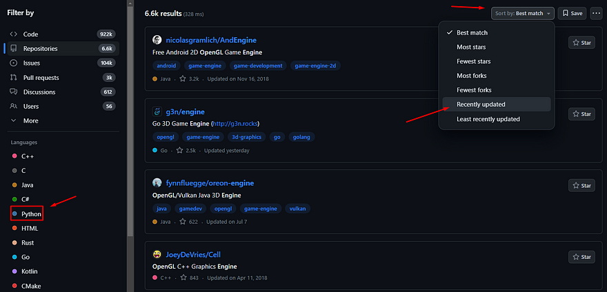
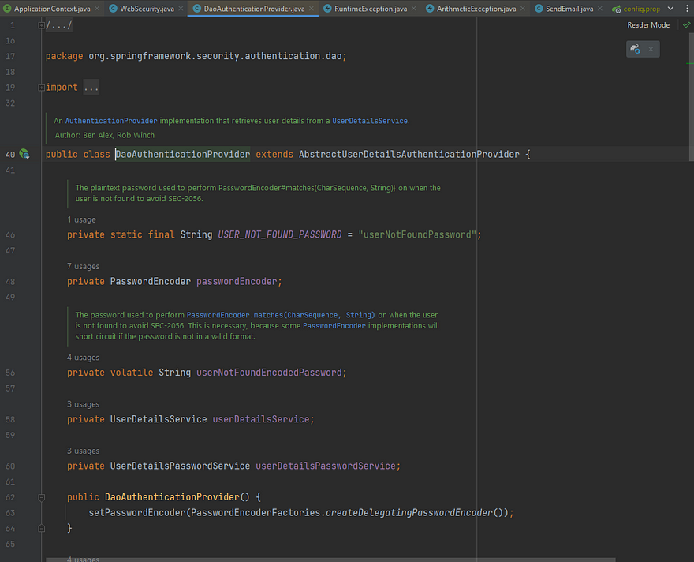
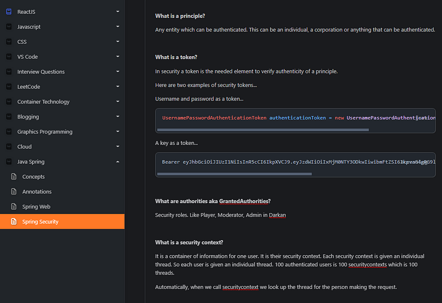
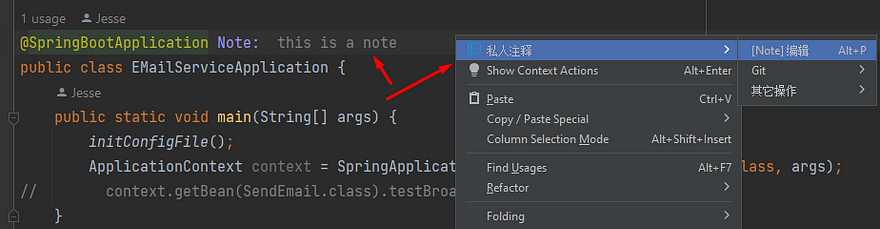

For learning through pure implementation there is a barrier to entry.
You need fundamentals.
Pure implementative learning comes from reading code which already exists.
Documentation describes that code, yes, but in the end you are looking at code.
In addition you need to know enough of the language to understand at least a portion of the code you are reading.
If you do not know what a function or a class is how can you read what a specific class or function does?
This applies to many frameworks and code sources where the understanding we need for it requires some essential concept.

If you are unsure of the fundamentals you can read my guide, do I know the fundamentals?
But if you are past that, let us assume you know a good chunk of at least 1 language and have the fundamentals down.
The question at this point is, how do I study languages and frameworks without courses?
Sometimes there is no choice but to learn through implementation.
And more, often it is better to focus purely on implementation and learn theory in the midst of coding.
Lets talk about how to do that.
Use existing projects in your code
When we first start a language or framework we typically do not know what we do not know.
The cure for this is to either go through a full course on the topic and learn that way.
Or, take existing code sources and use them as a template for ourselves while we implement code.
Lets take OpenGL game engines as an example.
OpenGL example
OpenGL, like general programming, does require you to learn the fundamentals of graphics programming.
This should be done with a full course just like learning a new language.
Here is my article on the beginning of OpenGL for you.
But, once you are past the fundamentals of graphics programming you should be able to read OpenGL code and understand some parts.
However, in the OpenGL ecosystem there are no full courses on learning OpenGL.
There are, but they are too short, do not have homework and often have poor lectures.
Without this luxury you are stuck doing only 1 thing, implementive learning.

This is the thing advanced programmers tout as the only best way to learn.
Honestly, I doubt that.
But often you have no choice but to learn this way.
A great replacement in cases like these is to take a starter project.
Open up your favorite open source website, look up your language and framework.
Pick your language, like Python, your framework, like OpenGL, and sort by recently updated.
You will see many projects in your niche.
Pick one that is currently being updated and is relevant to you.
Clone it into your computer and read through it.
Is it useful?
Does it run?
Can I make a starter from this?
If you answer yes to these then use it and build off of it.
Java Spring example
Another great example framework for implementive learning is Java Spring.
This framework hardly has great full courses.
You likely would find yourself stuck with implementive learning.
Do the same thing as OpenGL...
Search "java spring" on an open source website and sort by recently updated.

You will find starter projects, templates and code sources for different purposes.
Clone it and check it out.
Is it relevant?
Does it run?
Can I make a starter from this?
If you answer yes to these, then use it.
But, isn't using other people's code cheating?
Absolutely not.
Big programming projects like Godot are known for using graphics programming techniques from other engines.
They rewrite it of course, but they give credit and everybody celebrates the achievement.

Often, software developers in other projects use other people's implementation anyway.
I always hear my advanced coder friends say, "yea man, this other project had the logic I needed for my app".
They copy the logic of someone else's code, cite the source and implement it in their project.
It is what we do, it is called open source.
Using starter templates is a virtue not a vice.
It is good to always read other people's code in your niche so you can pick up on new logic.
Try to learn as many classes & functions as you can
Often what you find, the code you think is least important helps you the most in understanding a code source or framework.

Start with those most used or most intriguing.
But study with the intent of understanding the whole code source and third party libraries.
Go inside 3rd party library code
If I feel inclined to learning a framework while I am coding I go inside the class or function within the third party library.
I read what the class is about, what classes or interfaces it inherits, and what the most commonly used functions actually do.
It looks like this...
This is inside a third party Java library .jar.
If you were in C++ you would go inside a header file or DLL.
If you were in Python, you look inside the code through your pip environment.
Often reading the contents of a 3rd party library is the best way to learn.
Use an LLM as a tutor
Copy and paste the third party code into an LLM.

Ask these questions,
- "Explain it like I am in 10th grade, what is this class for?"
- "What are the most commonly used functions?"
- "Explain the use cases for commonly used fields"
- "What other classes do I need to understand to grasp this class?"
- "Why does this framework use this class?"
Then try to understand the underlying principles of how that file fits into the framework.
I do this for every class and function up to the point I understand why everything is put together in the code source.
This is extremely valuable.
This method of learning was literally not available before 2022, which is super cool.
Take notes on the framework and niche
No matter what you do, you will forget concepts and terminology.

It will be easier to learn the second time around.
It will be even easier if you are the one teaching yourself in the future.
I recommend taking notes with Codex.
The goal of taking notes is to make your learning last longer than it would without it.
Here is an example of some recent notes I took which should help me in the future...
I organize it and write it down in a way I would understand and no one else.
If you want to learn to do this well I wrote a quick guide on note taking with Codex.
Notetaking with private projects when you cannot add comments
This mostly applies to undocumented, unique private team projects where you are not allowed to use an LLM.
LLMs record every piece of code you put into it.
It then has the potential of leaking code to other developers whenever they ask about a similar topic.
Because of this we often have to learn by asking other team members questions or reading about it ourselves.

When we do so, it is very difficult to go back and forth from something like Codex back to our code source.
A way more efficient method would be to add comments inside the project itself.
The problem is, you are also not allowed to add comments to the code itself!
So what do you do?
How do I study a code source without going back and forth between Codex and the code?
How do I readily understand the context of team code while I am reading it from understandings previously gained?
Enter in-line note taking plugins.
While you are studying a code source at say, work, or with a private project with friends you can take notes in-line.
Inside the code itself you can take notes and explain to yourself what this function or class does.
Very handy for these type of projects.
However, this does not really apply to public projects or those which you can use an LLM.
Because with an LLM we are focusing more on conceptual learning Codex is better for public code sources.
Private projects are so esoteric separate notetaking just becomes cumbersome and we need in-line notes to remediate knowledge.
Here are two example plugins for in-line note taking
Visual Studio Code:
JetBrains IDEs: https://plugins.jetbrains.com/plugin/17874-private-notes
Separate the coding process from the design process
Coding and designing at the same time is very difficult.
Often we fall into this trap.
When you first start an implementation project, the very first thing you must do is know what you are creating.
What is something you can create within your technical ability?
Write down a design, or a todo list of sorts.
It can look something like this...

The goal is to have a loose TODO list so you are always guided.
You want to code with the end in mind.
All your code becomes more performant, cleaner and concise when you know what you are trying to make as you make it.
All code is for one purpose, following your design.
You can pick from the TODO and write it in how you feel best.
In addition I pre-created a document format in MongoDB, like so...

I used it as a guide for creating database queries.
Stuff like that.
Things you can guide ahead of time are...
- Overall application goals
- Project features
- Website layout and design.
- Implementation logic
- Database schema
- Project structure
- Etc.
The question you are trying to answer as best you can is, what do I want to do?
The idea is to plan out what you are going to code so you are not designing as well as coding at the same time.
This way you separate design and coding.
Anywho, I hope you learned something...
Happy coding!
Resources
Why code fundamentals: Why Coding Fundamentals Are Important
Learn graphics programming fundamentals: The Ultimate Guide to Learning OpenGL
Codex: https://codexnotes.com/